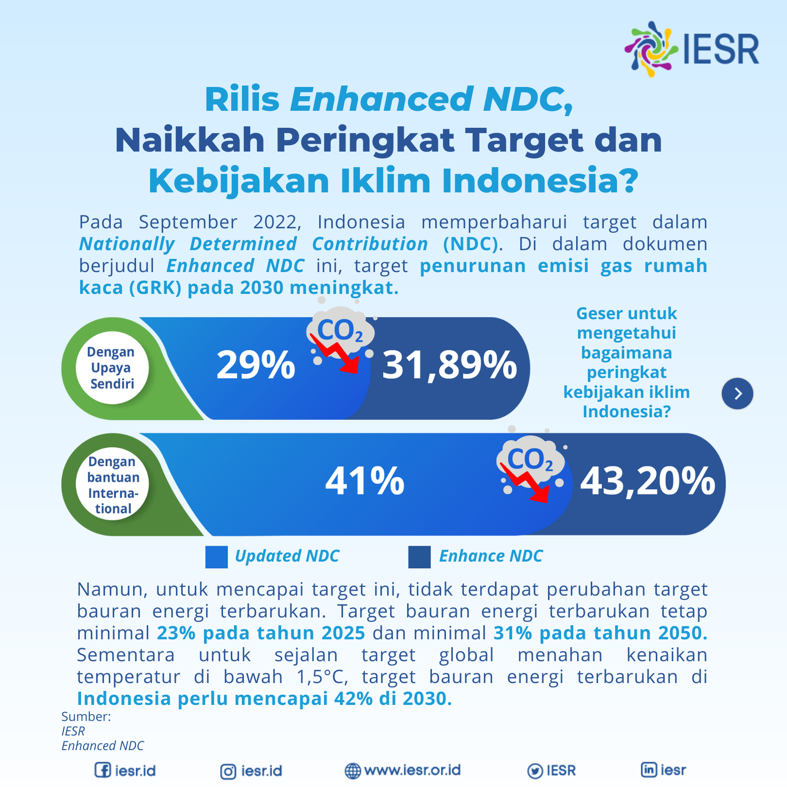
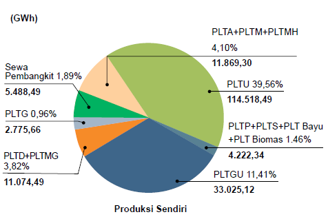

Seminar Nasional Politeknik APP Jakarta 2023
November 23, 2023
The recent development
Model setting
Results & discussions
conclusions

Indonesia recent NDCs vow to reduce emissions by 31.9% (CM1) and 43.2% (CM2)1 in 2030, net-zero emission (NZE) in 2050.
From those, energy emission must reduced by 12.5% and 15.5% respectively.
Financing will be a challenge, as it requires 3,500 Trilion IDR
Electrification is central to the Indonesian effort toward the climate goals:
Grid is very coal dominated, but that’s cuz it’s cheap(Burke et al. 2019).
Transitioning will be costly, but electricity price will also go up.
May impact the already low energy consumptions.
According to Resosudarmo, Rezki, and Effendi (2023), MEMR (2020b), MEMR (2020a) and MoEF (2021) Lolla and Yang (2021):
52% total PLN’s electricity by renewables in 2030.
In 2040, no more coal: full renewable electricity.
In 2030, 64% electricity will be generated by Independent Power Producers (IPP)
Lots and lots of EV and induction stoves.

Indonesian electricity sector is heavily regulated and PLN is the sole distributor.
Prices are layered with household (44.78% of total consumers) typically pays the least, followed, industries (31.4%), business (17.25%), and then the government (6.57%) (PLN 2021).
Renewable is still very small, dominated by Hydro (11TWh), Geothermal (4TWh), and very little solar (5GWh).
PLN can’t increase price & must cut subsidy. Thus, rely on coal.
Independen Power Producers (IPPs) will play a bigger role:
Growth of renewable mainly comes from IPP solar and HH rooftop: of total 225MW solar capacity, only 9% is PLN-owned.
PLN cannot freely switch prices: it cannot increase price to consumers who buys electricity from expensive producers.
Uncertainty on land use and procurement are problems.
The Indonesian government leads the effort with the creation of Emission Trading System (ETS).
The government will set a carbon cap to polluters. If a firm needs to pollute more than the cap, they must purchase permit from firms which pollute less or got taxed.
In a perfectly functioning market, this is efficient. Govt can also reduce cap each year little by little.
The price at the moment is hovering around 60-70k IDR/kgCO2 (around 4USD). Compare with foreigners? Still too cheap.
What if NDCs are met?
How much emission can we reduce, how much electricity is going to cost under different scenarios.
Should we retire coal? Or should we keep using coal but retire everything else and speed up renewables?
I use linear system by first assume a perfect substitution between 3 sources of energy: renewables, coal, and other fossil fuels.
Let \(p \cdot w\) be a total cost of generating electricity (in Watt hour) from 3 sources: clean \((w_a)\), coal \((w_b)\), and less carbon-y fossil fuels \((w_g)\)
We add emission constraint to this standard cost minimization problem with \(a,b,g=\) emission factor of its respective energy source
We then get a completely linear system:
\[ \begin{aligned} \min_{W} \ & p \cdot w \\ \mbox{subject to } \ & w_a+ w_b+ w_g \ge \omega \\ & aw_a+bw_b+gw_g \le \varepsilon \\ & w_a,w_b,w_g \ge 0\\ \end{aligned} \]
Cost optimization allows for a compensating variation calculatin (Cowell 2006).
Perfect substitution have important implications:
Perfect changes in electricity mix reflects a longer run scenario.
The cost of substitution isn’t reflected by the model.
Short-run constraint can be modeled by setting boundaries on the possible solution.
| case | description | model setting |
|---|---|---|
| 1 | status quo | restricting the current share of generation. |
| 2 | current emission, optimized | case 1 without source restriction. |
| 3 | carbon tax | Same emission limit but with a carbon tax |
| 4 | CM1 | same prices but a 12.5% emission reduction |
| 5 | CM2 | same prices but a 15.5% emission reduction |
| 6 | New RUPTL | case 2 with 52% renewables |
| 7 | Zero coal | case 2 with 0% coal |
| 8 | Fully renewable | case 2 with 100% renewables |
| case | cost (IDR/KWh) | emission (TCO2) | clean (%) | coal (%) | others (%) |
|---|---|---|---|---|---|
| 1 | 906.11 | 225,208,103 | 17 | 60 | 23 |
| 2 | 819.96 | 225,208,103 | 24.67 | 75.33 | 0 |
| 3 | 1,071.53 | 225,208,103 | 24.67 | 75.33 | 0 |
| 4 | 902.63 | 190,277,276 | 38.07 | 61.93 | 0 |
| 5 | 918.07 | 183,753,484 | 40.58 | 59.42 | 0 |
| 6 | 988.49 | 153,998,343 | 52 | 48 | 0 |
| 7 | 1,247.93 | 202,629,399 | 0 | 0 | 100 |
| 8 | 1,284,44 | 28,947,057 | 100 | 0 | 0 |
Corner solution toward coal corroborate Indonesia’s reliance on coal.
Case 3: 50% increase in price -> 18.26% total cost, trivial emission reduction.
Carbon quota (CM1,CM2) increase cost less than carbon tax.
0 coal \(\rightarrow\) 37.72% extra cost, 100% renewable \(\rightarrow\) 41.75%
Note this does not account for the transition cost.
Coal is central to cost reduction (and reliability). It may be hard to retire coal.
Updated parameter is important: can the price of solar go lower in the future?
Since PLN is slow, enabling IPP will be key:
Floating PV may be a partial solution to lower renewable cost.
Carbon market is only as efficient as its institution. Can it endure the test of time?
It is shown that greening the grid is central to achieve Indonesia’s NDCs
Given vast majority of its users are HH and industry, rising cost can be a huge problem.
A linear substitution model shows electricity prices can potentially rise to more than 37%
Early-retiring coal may be too ambitious, and enabling IPPs to grow renewable is necessary.
Comments and Questions are welcomed